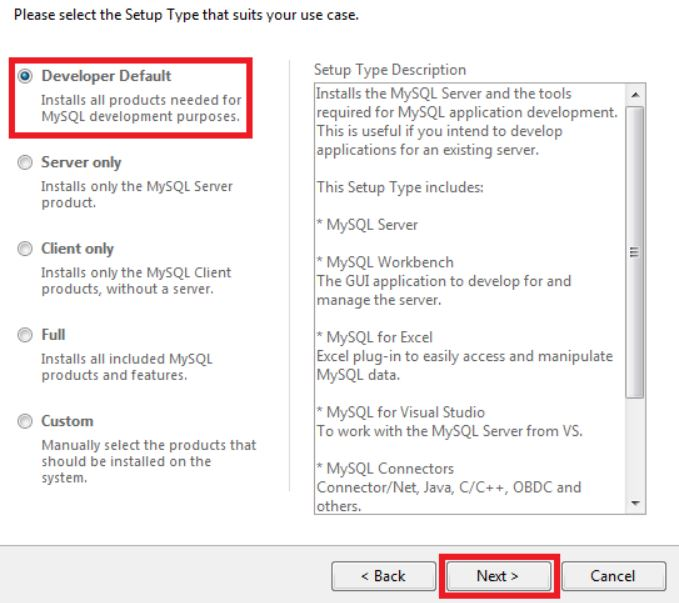

Como instalar MySQL en Windows
MySQL es un sistema de gestión de bases de datos relacional gratuita, que puedes emplear en equipos con distintos sistemas operativos y hasta con Excel, lo que lo hace muy versátil. Además de relativamente sencillo de usar, siendo uno de los programas de bases de datos más empleado junto a Oracle y Microsoft SQL Server.
enlace para descargar version 8.1.18 MySQL AQUI descarga
Creación manual de tablas
Te aparecerá una pantalla con la versión del Sistema Operativo que esta actualmente instalado en tu PC y dos opciones a elegir. La primera opción descarga un pequeño instalador que se conecta con el servidor de MySQL para ir descargando los demás archivos mientras se va instalando. La segunda opción descarga el instalador completo y no se necesita de una conexión a Internet para realizar la instalación.
Te aparecerá una pantalla con la versión del Sistema Operativo que esta actualmente instalado en tu PC y dos opciones a elegir. La primera opción descarga un pequeño instalador que se conecta con el servidor de MySQL para ir descargando los demás archivos mientras se va instalando. La segunda opción descarga el instalador completo y no se necesita de una conexión a Internet para realizar la instalación.
Después de seleccionar el instalador de tu preferencia te aparecerá una pantalla para que te registre en la pagina de MySQL.com y puedas autenticarte. Puedes evitar esta inscripción seleccionando la opción que esta en circulo rojo No thanks, just start my download y se comenzara a descargar el instalador en la carpeta Descargas de tu PC.
2. Selecciona el tipo de instalación.
La instalación es muy sencilla, solo debes seguir el asistente y el te guiara hasta el final de la instalación. He seleccionado las pantallas más importantes para hacer una explicación mas al detalle.
Selecciona el tiempo de instalación que deseas instalar de acuerdo a tus necesidades. La instalación Developer Default es la opción predeterminada y la que utilizan los desarrolladores y personas que recién se están iniciando en MySQL.
3. Instalar requerimientos.
En el proceso de instalación te encontraras con pantallas similiares a estas donde tendras que presionar el botón Check que esta en enmarcado en rojo. Esto iniciara el proceso en este caso para instalar los requerimientos que necesita el sistema, después se activara el botón Next para que puedas continuar.
4. Definir puerto de comunicación.
Me pareció importante mostrar esta pantalla porque indica el puerto por donde se comunica el MySQL, como este puerto es de conocimiento publico, por motivos de seguridad podríamos cambiar el numero de puerto a uno distinto.
5. Usuarios y roles
Al llegar a esta pantalla se nos solicitara ingresar una contraseña para el usuario root, que es el usuario administrador del MySQL. Tambien podemos crear otros usuarios para usarlos en nuestra aplicación, mi recomendación es crear un usuario exclusivo para que su aplicación se conecte con el MySQL.
6. Configurando servicios
Al llegar a esta pantalla debemos dar click en el botón Execute para iniciar todos los servicios que hemos creado. Si todo es conforme el sistema podremos proseguir con la instalación.
6.1. Conectando al Servidor
En esta opción nos solicitan que ingresemos el Password que le pusimos al usuarios root. En la parte final del proceso de instalación el sistema verifica que todo los servicios funcionen correctamente y que el usuario root se pueda conectar con el servidor de MySQL.
7. Iniciando servicios
Finalmente, presionamos el botón Execute para que se inicien todos los servicios, si todo es conforme el proceso de instalación habrá concluido y nos mostrara la pantalla de administración Workbench. MySQL es una de las bases de datos más usadas en el mundo, es gratuita y es fácil de usar. El propósito de este articulo es que puedas brindarte la ayuda y asistencia necesaria para que puedas empezar a utilizarla en la universidad, en un proyecto personal o en tu centro de trabajo.
FELICIDADES!! a instalado de forma correcta MySQL.